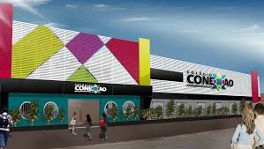
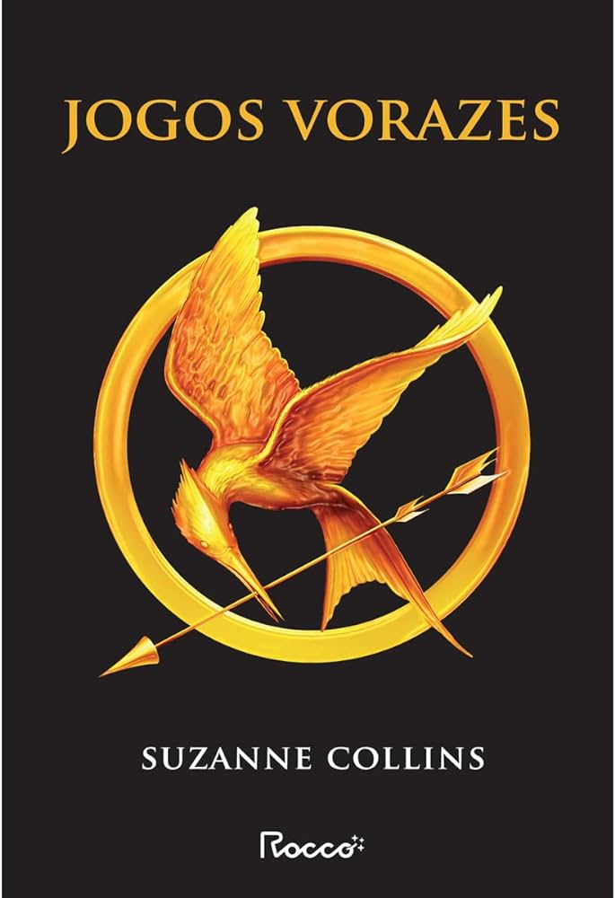

De onde venho:
Nasci em Brasília, no dia 19/2005. Me chamo Danilo, mas quase fui chamado de Dante.
Como é a minha vida:
Moro com meus pais, minha irma e minha cachorrinha, a Mel. Ela é uma Beagle tricolor.
Meus pais se chamam Angela e Beto. Minha irma se chama Erica e tem 16 anos.
Minha historia:
Atualmente moro em Vicente Pires, mas cresci me mudando entre Ceilandia e Taguatinga, estudei a maior parte da minha vida no Colégio Conexao, uma pequena escola na QND.
\>O que gosto de fazer:
Meus principais passatempos sao assistir filmes, montar quebra-cabecas e ir para a academia. Meu filme favorito é Jogos Vorazes, atualmente estou lendo o primeiro livro da saga.
Meus objetivos na área de TI
Já comeco dizendo que nao tenho o perfil comum dos alunos da área de TI. Nao tenho essa paixao toda, mas adoro matemática e raciocínio lógico, entao imaginei que seria uma boa opcao de área a seguir naquela loucura de fim de ensino médio. Espero muito me adaptar a isso, pois marquei todas as minhas opcoes nos vestiblares para cursos relacionados a isso. Inclusive, passei na UnB para os cursos de Engenharia de Software e de Engenharia de Computacao. Optei pelo segundo por conta das melhores condicoes do Campus Darcy Ribeiro em relacao ao FGA. Meu primeiro contato com computadores (além dos jogos de crianca) foi atraves de um curso de Pacote Office. Logo após o término dele, fiz um curso de lógica de programacao pelo Senac PR, em EaD.